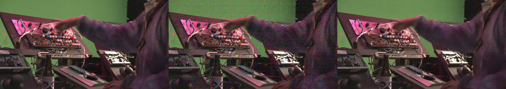
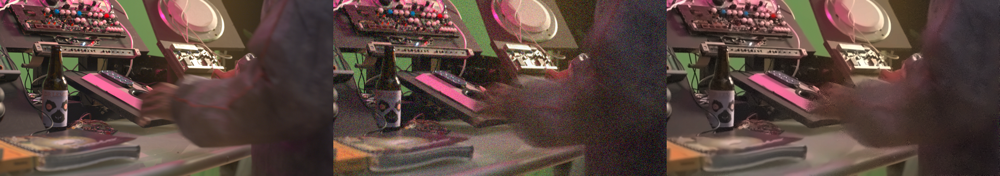
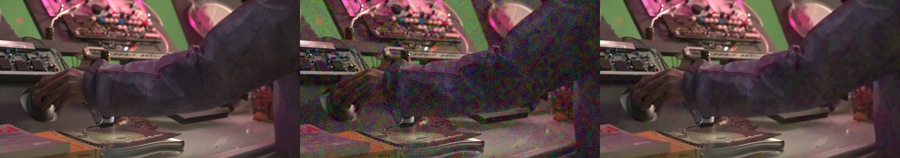
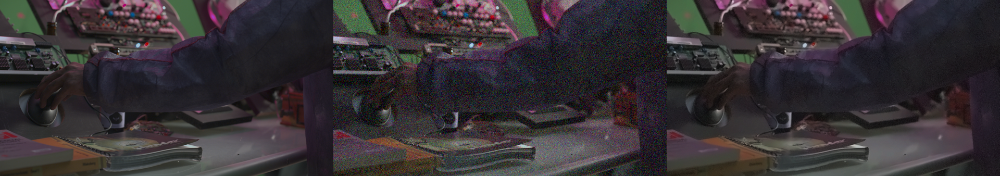
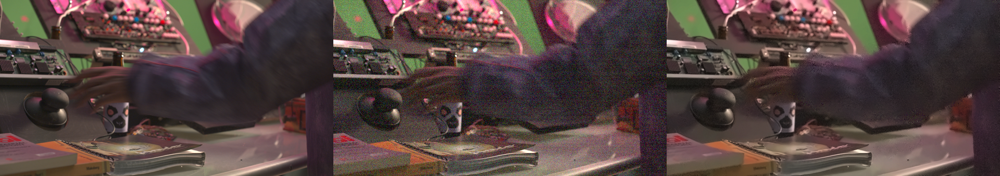
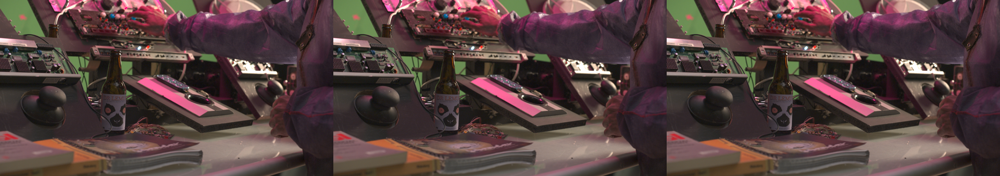
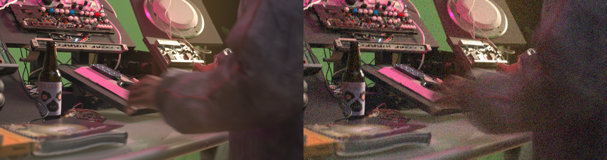

无损参考保留设计光变
LOW-LIGHT RESTORATION / DAMAGE STUDY
这次，损伤看得清吗？
同一段真实动作，对比无损参考与加重损伤。观察颗粒、闪动和残影，也留意必须保住的光线与手部细节。
26秒
640 × 338 · 24 fps
624 帧 · 无音频
已有部分评分 · 待评项保留
正式总分与硬门槛分别展示；本轮输入为v3，历史v2分数不作同条件比较。
总分：待评 / 100已核实：53.1555 · 待评权重：40硬门槛：待确认 · 实际用时：35.31 分钟
| 评分项 | 得分 | 满分 |
|---|---|---|
| 交付格式 | 5.0000 | 5 |
| 修订层重放 | 5.0000 | 5 |
| 分段修复改善 | 15.0000 | 15 |
| 运动细节 | 13.2766 | 15 |
| 时间连续性 | 5.0000 | 5 |
| 设计光变 | 4.8788 | 10 |
| 正常保护段 | 5.0000 | 5 |
| 真实动作保留 | 待评 | 15 |
| 实际修复质量 | 待评 | 15 |
| 灯光意图 | 待评 | 10 |
失败项：无
四个受损区段的 PSNR 改善：8.57 / 7.63 / 9.66 / 10.55 dB。保护段最大逐帧平均误差：0.000000。
无损参考 / 受损输入 / Sol 修复
左、中、右三栏顺序固定；同一视频逐帧同步，可全屏观察。
查看 6 个关键时刻的无损 PNG

4.00 秒 · 打开原尺寸 PNG ↗
8.00 秒 · 打开原尺寸 PNG ↗
14.00 秒 · 打开原尺寸 PNG ↗
19.00 秒 · 打开原尺寸 PNG ↗
23.00 秒 · 打开原尺寸 PNG ↗
25.50 秒 · 打开原尺寸 PNG ↗修复画面来自封存母版；网页视频为浏览副本。
Sol / high · 实际修复成片
V3 加重损伤噪声 · 闪动 · 拖影
08.00 / 26.00 秒第 192 帧 / 623
00:0000:0500:1000:1500:2000:26
正在载入视频…同一视频承载左右画面 · 逐帧同步
从这些片段开始看
点击定位，播放时循环所选范围更脏、更闪，运动边缘有残影。
新版加重暗部颗粒，局部加入成团色噪和横向纹理；闪动更明显，运动区域混入前两帧。动作、画幅和帧序保持原样。
有意的光变，不是故障。
4—10 秒移动暖光，17—21 秒缓慢偏冷变暗。0—2、11—12、25—26 秒为正常保护段。左侧参考已包含这些设计效果。
参考来自当前题包的干净目标，并非未调色 EXR。本轮使用冻结的 v3 题包与评分规则。对照工具已通过正反例检查；常规修复基线未通过门槛，任务可修复性仍需结合实际答题结果判断。
无损静帧对照
PNG 直接取自母版，排除网页视频压缩影响
左：无损参考 / 右：V3 加重损伤。点击图片查看原始尺寸。